TECHVESTVENTURES DAILY RISK ALERTS — Emergent News Digest — Nov 16, 2026, 9:00 AM EST ALL RISK REPORTS click TVV Risk Center
TVV RESEARCH DIGEST — November 16, 2026 — 13 desks
Prioritized Risk Summary November 16, 2026
| Sections Ranked for Importance Today | |
|---|---|
| TECH | Nvidia CEO crisis: Huang return talk vs Bessent's outside-CEO call; results Tuesday |
| DERIVATIVES | Nvidia's $530B commitment web and record $1.45T margin debt meet Tuesday's print |
| STOCKS | Nvidia −29% in a month; Asian tech falls 4% before the print |
| ECONOMY | 10-year yield 5.14% after biggest weekly jump since 2025; China, Japan weaken |
| ODDS | Fed December hike priced at 96%; Nvidia CEO named by Feb 1 only 46% |
| GEOPOL | Tanker struck off Oman; Iran claims unverified supertanker sinking in Hormuz |
| AI BOOST | Anthropic IPO orders near 7x before Wednesday pricing; China orders turned away |
| HEALTH | Africa CDC: DR Congo Ebola outbreak still not under control, 11,200+ cases |
| TERROR | Israel kills Hamas Rafah commander; Jordan sentences church attackers |
| COMMODITY | Brent below $95 despite tanker attacks; gold near $3,870 |
| INFRA | AI backlogs: Oracle $664B, Microsoft $683B, resting on a few labs |
| SPACE | Minor G1 storm likely Nov 17–18 |
| QUAKES | No damaging M6+ quake; largest M5.8 off Peru |
1. Major Geopolitical Conflict Developments
- ★ Hormuz (conflicting claims, screen skeptically): Iran's Revolutionary Guards say two unnamed tankers hit mines in the strait's southern corridor and that a supertanker carrying over 2 million barrels sank; its video shows fire on the water but no discernible ship, and there is no independent confirmation. Confirmed: the UK Maritime Trade Operations agency reports a tanker struck by an unknown projectile off Oman early Monday (engine-room fire, crew safe), after a VLCC was hit in the steering-gear room near Hormuz on Sunday. Iran says only its northern corridor, with its own authorization, is a legal route. Seatrade Maritime · Iran International · CNA
- ★ Threats against US leaders (report citing anonymous officials): Israel Hayom reports that Mossad warned the CIA that Iran intended to target President Trump and senior officials, including with explosive-laden drones, and that public appearances were curtailed and counter-drone measures added; the CIA has not confirmed it. Asked about it Sunday, DHS Secretary Markwayne Mullin did not confirm that report but said officials receive "aspirational threats from Iran" daily. Treasury Secretary Scott Bessent told CNBC on Friday that Iran had made death threats against him and that he moved to a military base on Secret Service instructions. Israel Hayom · Fox News · CNBC · USA Today
- ★ Escalation talk: in his Stephen A. Smith interview, Trump said the US has "for the most part, left their bridges alone" and not hit Iran's energy, but could destroy energy, bridges and manufacturing in "three days. One day each," and that Gulf states preferred a "waiting period." The Revolutionary Guards showed a new underground "missile city" on Nov 10, with a general warning that a further attack would bring a response "beyond the region." Jerusalem Post · Jerusalem Post
- ★ Ukraine: Moscow says it downed 1,336 Ukrainian drones overnight, about 600 of them aimed at the Moscow region, the second-largest daily count this year by AFP's tally; Ukraine hit the Kerch (Crimea) bridge, with minor damage per the Kremlin, plus the Ilsky refinery and an oil depot in Azov. Russia sent 158 drones into Ukraine, cutting power in six regions; attacks killed 6 and injured 45 over the past day. The barrage comes days before the Trump–Xi–Putin meeting in Shenzhen, where US officials say Ukraine will not be a focus. AFP · Kyiv Independent · France 24 · Anadolu
- ★ Leadership odds: Polymarket prices little instability among the summit principals: Putin out by Dec 31 1.7%, Xi out before 2027 1.8%, Zelenskyy 2.2%, Saudi Crown Prince Mohammed bin Salman 2.9%. Only Iran is above 5%, at 6.5%, down from 12.5% five weeks ago (see graph). Near term: bettors expect the same faces at the table through year-end. Polymarket
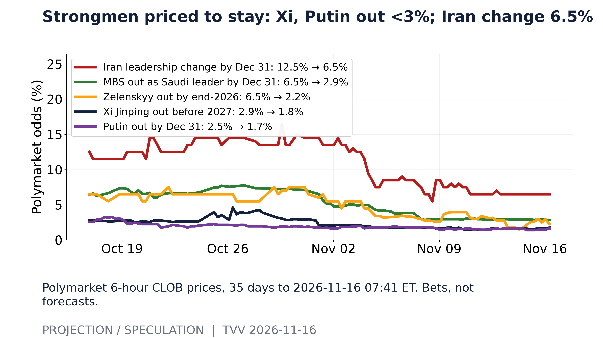
Strongmen priced to stay: Xi, Putin out <3%; Iran change 6.5%. Polymarket 6-hour CLOB prices, 35 days to 2026-11-16 07:41 ET. Bets, not forecasts. [Projection/Speculation; data as of 2026-11-16 07:41 ET] Source: polymarket.com data page
2. Major Terror / Security Incidents
- ★ Gaza: an Israeli strike on a tent in the Al-Mawasi displacement camp killed Samir Abu Younis, the new Hamas Rafah Brigade commander whom both Israel and Hamas's armed wing describe as a planner of the Oct 7, 2023 attack. Gaza's health ministry counts more than 1,640 killed since the October 2025 ceasefire. BBC
- ★ Jordan: the State Security Court sentenced three men to death for the Oct 23 gun attack on a funeral at St George's Greek Orthodox church in Karak governorate, which killed nine; they were convicted of terrorist acts and promoting a terrorist group's ideology. The ruling can be appealed. Al Jazeera · NBC News / Reuters
- ★ Separate incidents, not linked by any source: a bomb was found Friday at the BioUrja Renewables ethanol plant in Peoria, Illinois, forcing evacuations while the FBI investigates; suspected drone activity at RAF Lakenheath, England, on Friday evening raised security measures before the base returned to normal. Washington Post · BBC
- ★ Cyber speed: 70% of the 297 flaws CISA added to its actively exploited list in 2026 carry this year's CVE numbers, so attackers move on new bugs within months, while 10% are five or more years old, the oldest from 2008 (see graph). Patch speed and retiring end-of-life gear both matter. CISA KEV
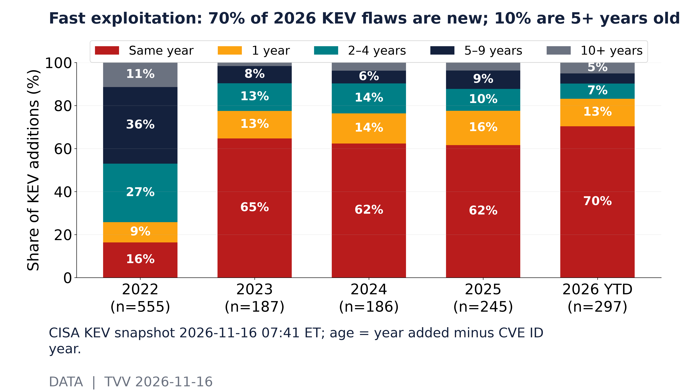
Fast exploitation: 70% of 2026 KEV flaws are new; 10% are 5+ years old. CISA KEV snapshot 2026-11-16 07:41 ET; age = year added minus CVE ID year. [Data; data as of 2026-11-16 07:41 ET] Source: cisa.gov data page
3. Earthquakes and Eruptions
- ★ No M6.0+ quake with significant casualties or damage since the last issue; the largest was an M5.8 off southern Peru on Friday. A TVV statistical fit to the past 12 months of USGS data (2,005 M5+ quakes) implies 81% odds of at least one M7.0+ worldwide before Jan 1, 39% for M7.5+ and 14% for M8.0+ (projection; see graph). That is the normal global rate, not a forecast for any place. USGS
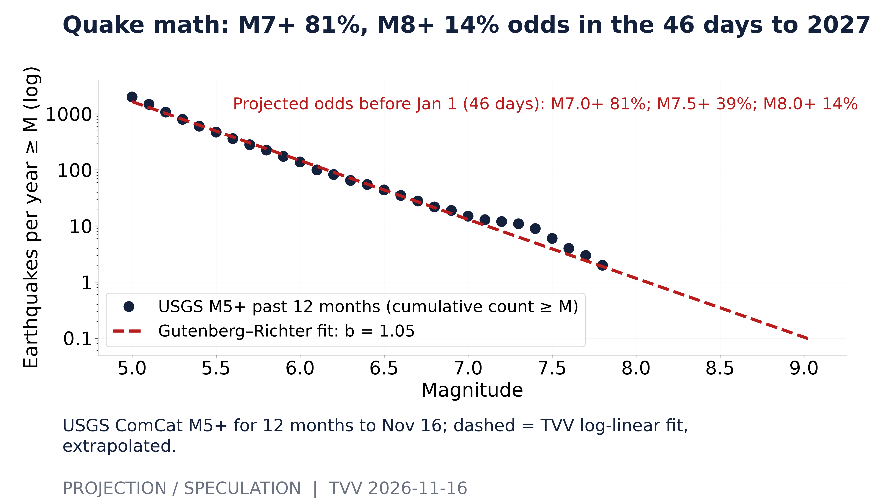
Quake math: M7+ 81%, M8+ 14% odds in the 46 days to 2027. USGS ComCat M5+ for 12 months to Nov 16; dashed = TVV log-linear fit, extrapolated. [Projection/Speculation; data as of 2026-11-16 07:41 ET] Source: earthquake.usgs.gov data page
4. Solar / Space Weather
- ★ Storm watch: NOAA's latest forecast says isolated minor (G1) storming is likely Nov 17–18 as a coronal-hole wind stream arrives, possibly joined late by a Nov 14 coronal mass ejection; Kp is forecast to peak near 4.67 on Tuesday afternoon after a quiet week (max Kp 3.33) (see graph). Effects are limited to HF radio and satellite drag; grid and GPS impacts need G3 or stronger. NOAA SWPC
- ★ Long-horizon warning: magnetic north keeps moving toward Siberia, which NOAA's model projects at about 33 km a year to 2030. No one can predict the timing of a sudden geomagnetic shift. Michael Hentschel's own view: 2035 at the earliest, with critical earth changes along the way. Next weekly pole map Nov 22. NOAA NCEI
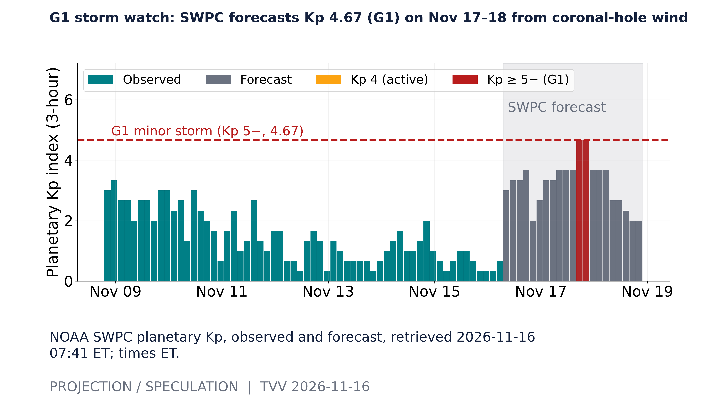
G1 storm watch: SWPC forecasts Kp 4.67 (G1) on Nov 17–18 from coronal-hole wind. NOAA SWPC planetary Kp, observed and forecast, retrieved 2026-11-16 07:41 ET; times ET. [Projection/Speculation; data as of 2026-11-16 07:41 ET] Source: services.swpc.noaa.gov data page
5. Critical Infrastructure / Transportation Disruptions
- ★ AI build-out backlog: contracted but unbilled revenue reached $664 billion at Oracle (August quarter), $683 billion at Microsoft, $568 billion at Alphabet and $132 billion at CoreWeave (September), against $455 billion, $398 billion, $158 billion and $50 billion a year earlier (see graph). Much of it rests on a few AI labs, so if OpenAI or Anthropic slow commitments, the demand behind data-center debt shrinks with it. SEC XBRL
- ★ Local pushback: CNBC counted 40 of 41 local data-center ballot measures on Nov 3 going against the projects. Separately, the NTSB's preliminary finding on Friday's tanker strike on the American Heritage riverboat in New Orleans is a "steering casualty." CNBC · ABC News
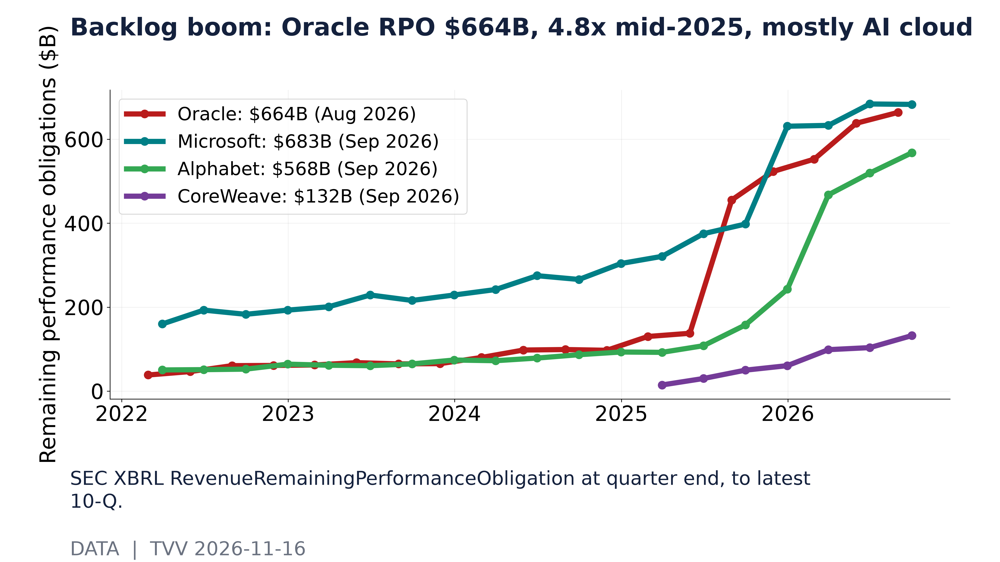
Backlog boom: Oracle RPO $664B, 4.8x mid-2025, mostly AI cloud. SEC XBRL RevenueRemainingPerformanceObligation at quarter end, to latest 10-Q. [Data; data as of 2026-09-30] Source: data.sec.gov data page
6. Econo-Metrics
- ★ Global data soften: China's October retail sales rose only 0.4% from a year earlier (forecast 0.8%) and home prices kept falling; Japan's economy contracted for the first time in a year. US 10-year yields hold at 5.14% after a 28-basis-point jump last week, the most since April 2025, and the dollar sits near its strongest since May 2025. Retail sales and Fed minutes are due this week. Bloomberg via Swissinfo · XTB
- ★ Job hunts lengthen: the average unemployed American has looked for 27.1 weeks, and 27.6% have been jobless 27 weeks or more, up from 23.6% a year ago and 21.2% in 2019 (see graph). A low-hire labor market hits new graduates and white-collar workers exposed to AI hiring freezes first. BLS via FRED · BLS
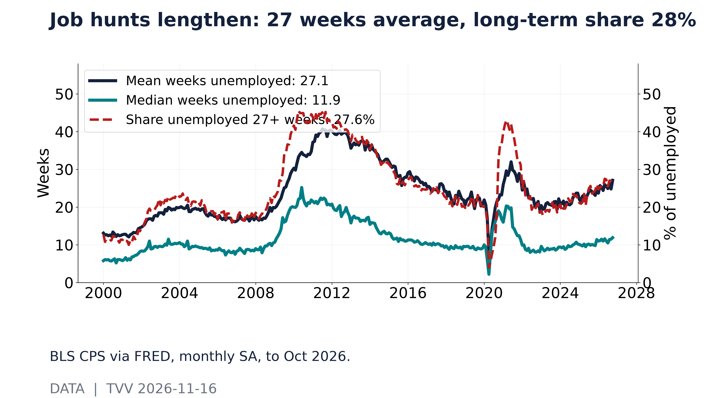
Job hunts lengthen: 27 weeks average, long-term share 28%. BLS CPS via FRED, monthly SA, to Oct 2026. [Data; data as of 2026-10] Source: fred.stlouisfed.org data page
7. Epidemic / Bio-Metrics
- ★ Ebola, DR Congo: Africa CDC chief Jean Kaseya says the outbreak is "still not under control" six months in and "would be the worst Ebola outbreak that the world will have" if not stopped now. Government data show more than 11,200 cases and 5,500 deaths; more than 80% of new cases arise outside contact lists, and only $1.3 billion of $2.9 billion pledged has been released. There is no vaccine for the Bundibugyo strain; WHO-approved trials report in early 2027. Al Jazeera / Reuters
- ★ Measles: CDC counts 5,594 US cases in 2026, against 2,107 in all of 2025 and 285 in 2024; 671 cases had rash onset in the last four weeks, which lag reporting (see graph). Chains lasting 12 months or more put US elimination status at risk. CDC
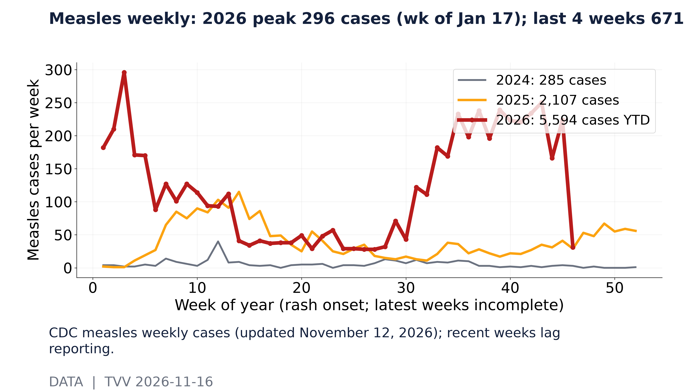
Measles weekly: 2026 peak 296 cases (wk of Jan 17); last 4 weeks 671. CDC measles weekly cases (updated November 12, 2026); recent weeks lag reporting. [Data; data as of 2026-11-12] Source: cdc.gov data page
8. Gold and Silver and Commodities
- ★ Oil ignores the Gulf attacks: Brent slipped below $95 and WTI to about $88 on Monday after a two-week slide, as weak Chinese data and Goldman Sachs' warning of a "sizable surplus" next year outweighed tanker strikes; Goldman sees Brent at $78 by end-2027. US natural gas fell about 2.6% to $3.15 on record LNG exports. Bloomberg via Swissinfo · XTB · investingLive
- ★ Metals under the strong dollar: gold eased to about $3,870 an ounce and silver to about $47.6 on Monday; last week gold fell 4.6% and silver 5.4%. Goldman cut its end-2027 gold forecast to $4,650. The gold/silver ratio is 79, far below its April 2025 high of 105, so silver has outrun gold over the past year (see graph). XTB · investingLive · Yahoo Finance
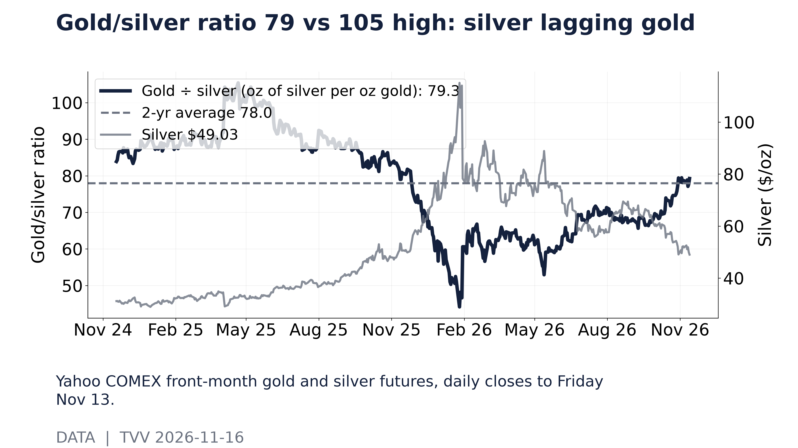
Gold/silver ratio 79 vs 105 high: silver lagging gold. Yahoo COMEX front-month gold and silver futures, daily closes to Friday Nov 13. [Data; data as of 2026-11-13] Source: query1.finance.yahoo.com data page
9. Stock Averages and Nasdaq Major Movers
- ★ Weekly tape, AI complex (Nov 6–13): Nvidia −12.7% on the week and −28.7% over the month, Nebius −44% and CoreWeave −31.7% over the month, while AMD (+18.9%) and Broadcom (+18.2%) jumped on the week; Apple (+4.4%) and Amazon (+3.1%) rose over the month against SPY −3.0% (see graph). Monday: Asian tech gauges fell more than 4%, Taiwan and South Korea at least 2.7%; US futures slightly lower. Yahoo Finance · Bloomberg via Swissinfo
- ★ Analysts before the exit: on Nov 11 Baird cut its Nvidia target to $200 from $500 and moved to Neutral, and Evercore ISI cut to $186 from $465. The Magnificent Seven make up 33.7% of the S&P 500, Nvidia 6.9% (Motley Fool, Nov 9). Morgan Stanley nonetheless went to "maximum" overweight on global stocks on Nov 15. CNBC · Benzinga · Motley Fool · Bloomberg via Swissinfo
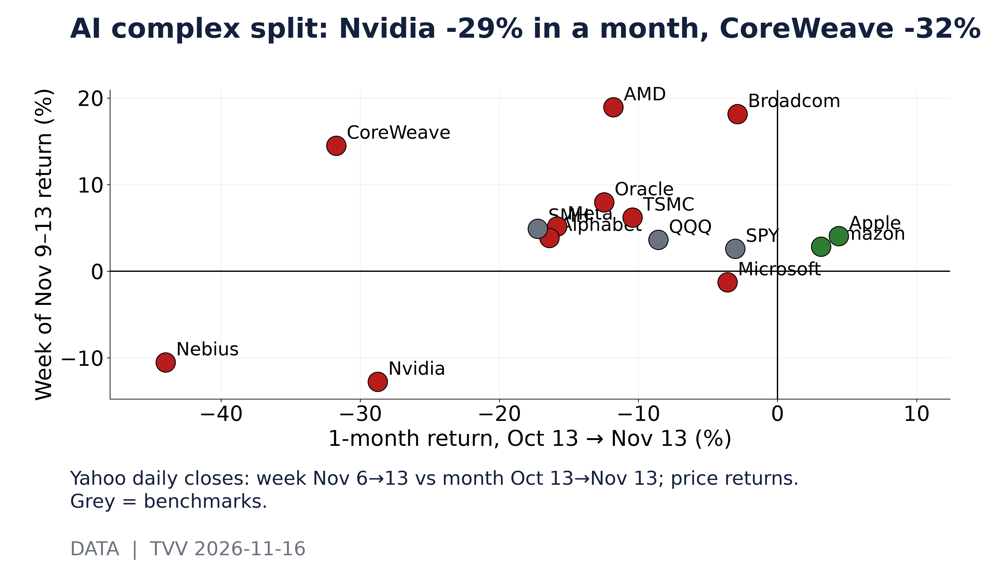
AI complex split: Nvidia -29% in a month, CoreWeave -32%. Yahoo daily closes: week Nov 6→13 vs month Oct 13→Nov 13; price returns. Grey = benchmarks. [Data; data as of 2026-11-13] Source: query1.finance.yahoo.com data page
10. Polymarket and Kalshi Sentiment Highlights
- ★ December rate hike priced: Polymarket gives 87.5% to a 25-basis-point Fed hike on Dec 9 and 8.8% to 50 or more, 96% combined, against 3.3% for no change, down from 21% five weeks ago; the 2-year Treasury yield rose to 4.86% (see graph). Near term: a hike into an AI-stock drawdown raises refinancing costs for leveraged data-center borrowers. Polymarket
- ★ Bitcoin traded near $65,100 in Asia after a four-month low around $62,000 over the weekend, pressured by the record Binance hack, rising yields and a strong dollar. investingLive · Bloomberg via Swissinfo
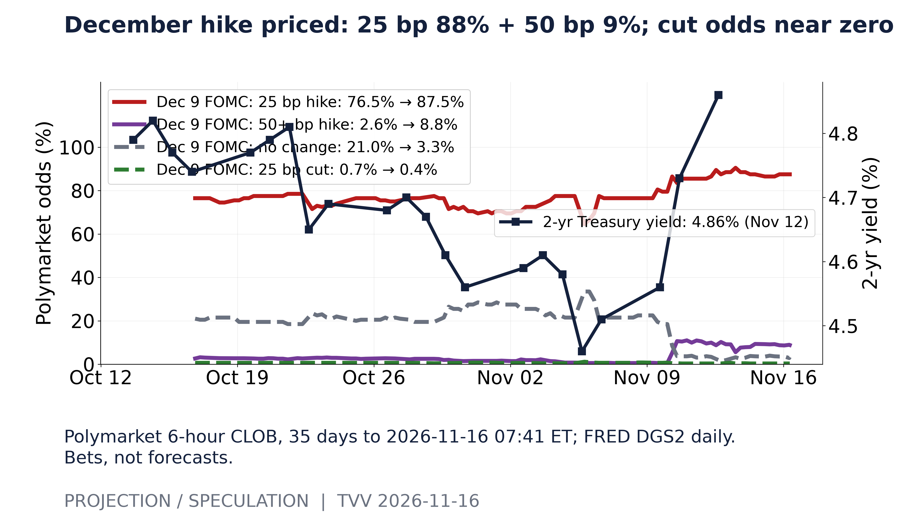
December hike priced: 25 bp 88% + 50 bp 9%; cut odds near zero. Polymarket 6-hour CLOB, 35 days to 2026-11-16 07:41 ET; FRED DGS2 daily. Bets, not forecasts. [Projection/Speculation; data as of 2026-11-16 07:41 ET] Source: polymarket.com data page
11. Tech-Metrics
- ★ Nvidia CEO crisis, week's top risk: the Financial Times reports, via Reuters, that Jensen Huang has discussed a return with confidants and that an ally is building a "war room" of Silicon Valley executives, with his support, to lobby the board and seek White House backing; a reinstatement petition has passed 170,000 signatures, backed by Elon Musk. Treasury Secretary Bessent instead called on Sunday for a "dramatic shakeup" and an outside CEO, and questioned export-control compliance. The board says it has not formally engaged candidates and continues an independent investigation. Facts are moving fast; a Huang return is one open scenario among several. Reuters via StreetInsider · CNBC · CNBC · CNBC
- ★ Tuesday test: Nvidia reports after the close (about 4:20 PM ET, call 5:00 PM ET), its first results without Huang; LSEG consensus is $109.1 billion of revenue, +91%, and $2.47 a share. Interim CEO Colette Kress faces questions on chip sales routed via Southeast Asia to China, neocloud deal risk and whether Nvidia keeps funding its financing deals. Shares fell premarket Monday; the price-to-earnings ratio is about 11, down from 40 eight months ago. All-hands meeting Wednesday at noon ET. CNBC · Reuters via Investing.com · Nvidia
- ★ Odds on the search: Kalshi gives 46% that a permanent CEO is named before Feb 1, down from 74% at the first trade, and 2% before Nov 20 (see graph). Next-CEO prices on Sunday night: Arm's Rene Haas 19.5%, Ian Buck 15.5%, Huang 14.5%, Kress 8.5%. Near term: bettors expect a slow search, not a name this week. Kalshi · Kalshi
- ★ Options price the reaction: Nvidia's at-the-money straddle for the Nov 20 expiry implies a ±9.6% move, about $16 a share or roughly $378 billion of market value, with implied volatility near 88% (projection from Friday quotes; see graph). Near term: traders expect a large move after Tuesday's results, in either direction. Cboe
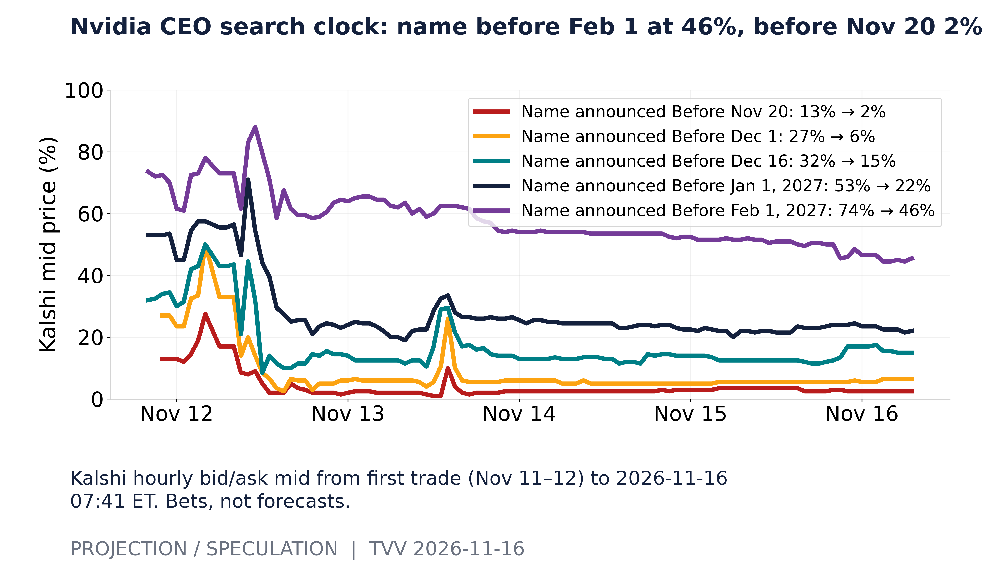
Nvidia CEO search clock: name before Feb 1 at 46%, before Nov 20 2%. Kalshi hourly bid/ask mid from first trade (Nov 11–12) to 2026-11-16 07:41 ET. Bets, not forecasts. [Projection/Speculation; data as of 2026-11-16 07:41 ET] Source: kalshi.com data page
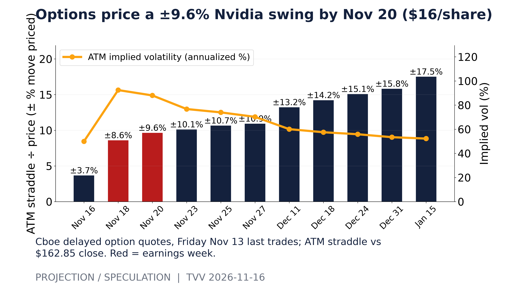
Options price a ±9.6% Nvidia swing by Nov 20 ($16/share). Cboe delayed option quotes, Friday Nov 13 last trades; ATM straddle vs $162.85 close. Red = earnings week. [Projection/Speculation; data as of 2026-11-13] Source: cboe.com data page
12. AI Hypergrowth Risks
- ★ Anthropic IPO, the week's second story: orders reached close to seven times the shares offered, Bloomberg reported Sunday, with demand hotter than SpaceX's at the same stage; the book closes Tuesday, pricing Wednesday, trading Thursday as ANT on Nasdaq. Terms: 825 million shares at $70–$78, a valuation of about $1.3–1.45 trillion; with a $26 billion private placement from chip and cloud partners (including Nvidia), up to $90.4 billion could be raised, the biggest listing ever. The Next Web / Bloomberg · Yahoo Finance · CNBC
- ★ Geopolitical side: banks turned away orders from mainland China and Hong Kong institutions, partly over US ITAR defense-trade rules, and some are trying routes such as a British Virgin Islands trust and swaps, Bloomberg reported. Governance experts at an investor-advocacy briefing flagged "red flags," and Anthropic's S-1 lists $895.4 billion of committed spending, mostly compute, against revenue of $33.2 billion in the first nine months. The Next Web / Bloomberg · Euronews · Yahoo Finance
- ★ Biggest IPO bet: Polymarket gives Anthropic just 5.5% to be 2026's largest IPO by market cap, down from 36.1% five weeks ago, against 93.8% for SpaceX (see graph). Near term: bettors expect a big debut but no surpassing of SpaceX's roughly $2 trillion value this year. Polymarket
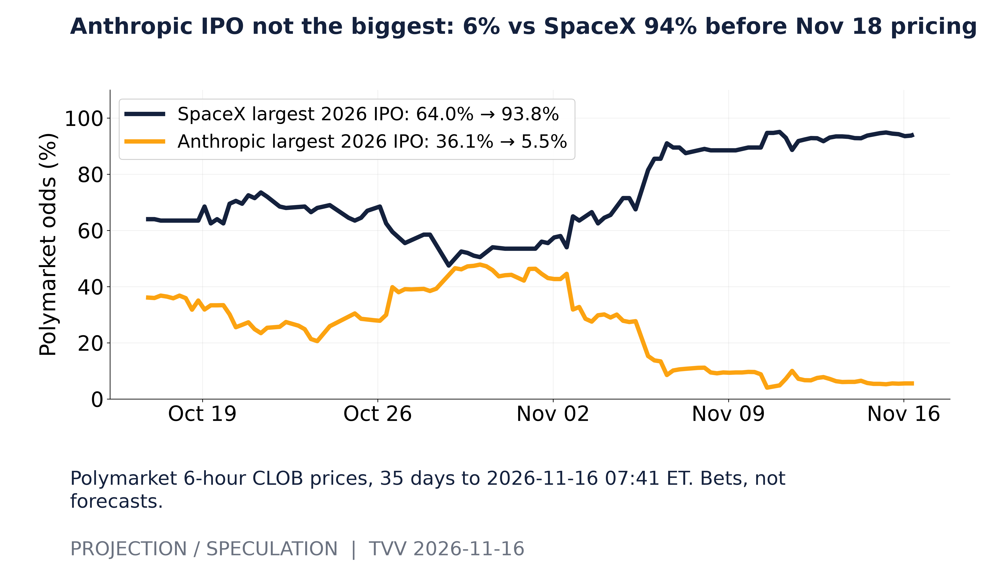
Anthropic IPO not the biggest: 6% vs SpaceX 94% before Nov 18 pricing. Polymarket 6-hour CLOB prices, 35 days to 2026-11-16 07:41 ET. Bets, not forecasts. [Projection/Speculation; data as of 2026-11-16 07:41 ET] Source: polymarket.com data page
13. Finance Bubble Derivatives Risk
- ★ Nvidia's commitment web: its July-quarter 10-Q schedules $366 billion of commitments plus $56 billion of AI-cloud and lease commitments, $422 billion in all, mostly purchase, cloud, lease, equity and capex promises rather than recognized debt (operating-lease liabilities were $5.0 billion). Guarantee caps total $108.5 billion, including a contingent $105 billion cap for SB Energy/OpenAI in Ohio signed after quarter end. Together that is about $530.5 billion, a mix, not one liability. Receivables were $63.1 billion, with days sales outstanding up to 60 from 45 on extended terms; cash and securities of about $99.4 billion compare with $33.4 billion of debt. SEC 10-Q · Yahoo Finance
- ★ Circular AI money: a Bank for International Settlements bulletin finds that from 2021 to 2025, 55.2% of investment into AI firms came from other AI firms, and says these circular ties "entail macroeconomic risks and increase opacity." Neocloud credit is the stress point: CoreWeave's third quarter showed $846 million of net interest against $207 million of operating income and a $709 million net loss; some of its 2031 bonds yield above 16% and five-year credit default swaps exceed 1,240 basis points. BIS · CoreWeave · CNBC
- ★ Leverage gauges: FINRA margin debt hit a record $1.45 trillion in October, +22% from a year earlier; before past tops the yearly growth peaked at +80% (2000), +63% (2007) and +72% (2021) (see graph). Leveraged and inverse single-stock Nvidia ETFs traded $4.1 billion on Nov 12, the day after Huang's exit; because they reset daily, they buy into rallies and sell into drops on big days such as Tuesday's results. FINRA · Yahoo Finance
- ★ Options stack and bubble bets: 1.27 million Nvidia option contracts (about 127 million shares) expire Nov 20 within 30% of Friday's price; the biggest put strike, $190, is already in the money, and dealer hedging around large strikes can amplify a post-earnings move. Polymarket gives 18% that the AI bubble bursts by mid-2027 and 10.5% to a CoreWeave bankruptcy by end-2027 (see graph). Near term: bettors treat an AI credit event as a tail risk, not the base case. Michael Hentschel's own view, framed by the Kondratieff cycle: derivatives are a real and present risk that various events could trigger, though probably not this month. Cboe · Polymarket
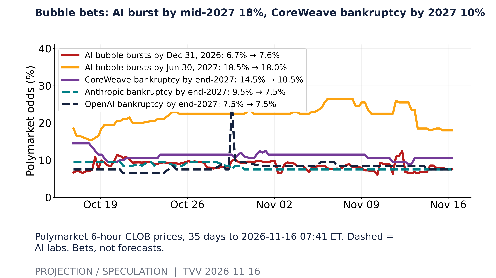
Bubble bets: AI burst by mid-2027 18%, CoreWeave bankruptcy by 2027 10%. Polymarket 6-hour CLOB prices, 35 days to 2026-11-16 07:41 ET. Dashed = AI labs. Bets, not forecasts. [Projection/Speculation; data as of 2026-11-16 07:41 ET] Source: polymarket.com data page
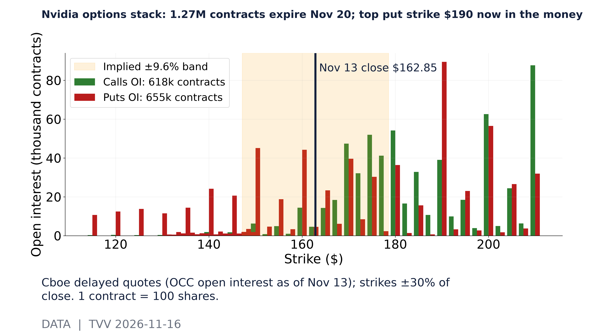
Nvidia options stack: 1.27M contracts expire Nov 20; top put strike $190 now in the money. Cboe delayed quotes (OCC open interest as of Nov 13); strikes ±30% of close. 1 contract = 100 shares. [Data; data as of 2026-11-13] Source: cboe.com data page
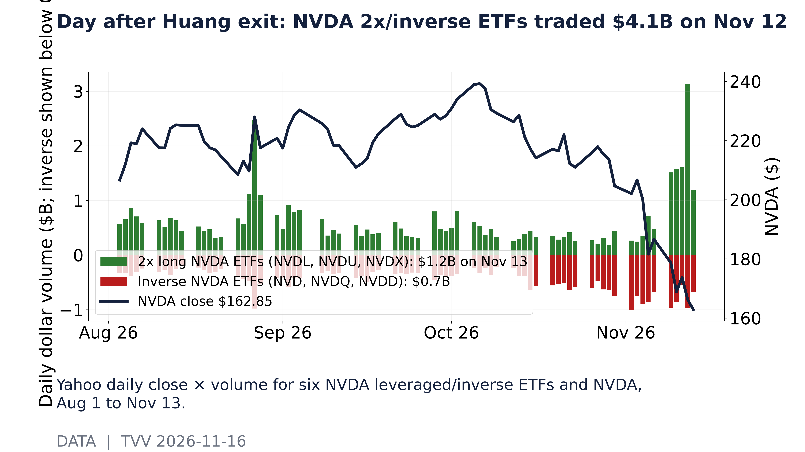
Day after Huang exit: NVDA 2x/inverse ETFs traded $4.1B on Nov 12. Yahoo daily close × volume for six NVDA leveraged/inverse ETFs and NVDA, Aug 1 to Nov 13. [Data; data as of 2026-11-13] Source: query1.finance.yahoo.com data page
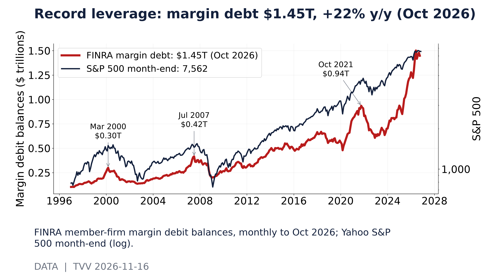
Record leverage: margin debt $1.45T, +22% y/y (Oct 2026). FINRA member-firm margin debit balances, monthly to Oct 2026; Yahoo S&P 500 month-end (log). [Data; data as of 2026-10] Source: finra.org data page
Prioritized Risk Summary November 16, 2026
| Sections Ranked for Importance Today | |
|---|---|
| TECH | Nvidia CEO crisis: Huang return talk vs Bessent's outside-CEO call; results Tuesday |
| DERIVATIVES | Nvidia's $530B commitment web and record $1.45T margin debt meet Tuesday's print |
| STOCKS | Nvidia −29% in a month; Asian tech falls 4% before the print |
| ECONOMY | 10-year yield 5.14% after biggest weekly jump since 2025; China, Japan weaken |
| ODDS | Fed December hike priced at 96%; Nvidia CEO named by Feb 1 only 46% |
| GEOPOL | Tanker struck off Oman; Iran claims unverified supertanker sinking in Hormuz |
| AI BOOST | Anthropic IPO orders near 7x before Wednesday pricing; China orders turned away |
| HEALTH | Africa CDC: DR Congo Ebola outbreak still not under control, 11,200+ cases |
| TERROR | Israel kills Hamas Rafah commander; Jordan sentences church attackers |
| COMMODITY | Brent below $95 despite tanker attacks; gold near $3,870 |
| INFRA | AI backlogs: Oracle $664B, Microsoft $683B, resting on a few labs |
| SPACE | Minor G1 storm likely Nov 17–18 |
| QUAKES | No damaging M6+ quake; largest M5.8 off Peru |
TECHVESTVENTURES ACTION-ALERT — November 16, 2026 see all graphs click TVV Risk Center
EDITOR — Michael Hentschel
Most news events require or spawn no action or reaction, some (but not many) are or become warnings. We draw attention to substantial lifestyle risks and market risks in particular, some created by Mid-Term Vote anxieties, Middle East tensions, vast over-indebtedness globally, and other events we track. Longer term but capable of causing sudden power surges as serious as the Carrington Event. Climate instability occasioned by long-term cyclical solar electro-magnetic flares, is becoming much more prominent and even more likely. New AI predictive analytics and pattern seekers are pointed in some of these directions, and we monitor imminent likelihood. Some readers might hedge and others might see opportunity. The above is not investment advice.